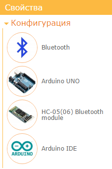
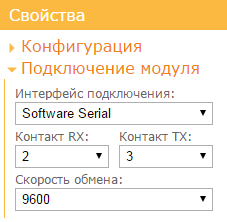
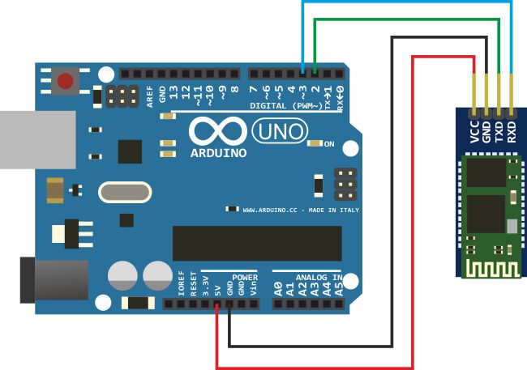
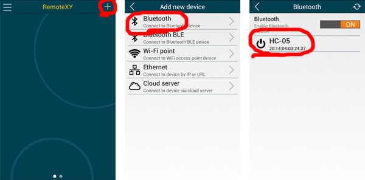

На этой странице вы найдете пошаговую инструкцию как запустить графический интерфейс на Arduino UNO используя модуль связи Bluetooth HC-05 или HC-06. Инструкция так же может быть использована для контроллеров Arduino Nano, Arduino Mini и совместимых.
Примечание. Устройства iOS не поддерживают модули с классическим Bluetooth HC-05(06). Вместо них вы можете использовать модуль BLE HM-10.
Войдите в редактор RemoteXY. Найдите на левой панели инструментов элемент Кнопка, и переместите его в поле телефона. Выделите кнопку в поле телефона, что бы вокруг нее отобразилась рамка. Когда кнопка выделена, в правой панели свойств разверните вкладку Элемент. В свойстве элемента Привязать к выводу установите значение 13(LED).
Примечание. Редактор позволяет указать вывод контроллера для некоторых элементов, которые могут однозначно определить состояние вывода, например "Включен "или "Отключен". Однако лучшим решением будет написание собственного кода управления выводами контроллера.
Разверните вкладку Конфигурация на правой панели свойств. Кликните в любой элемент списка, откроется окно выбора конфигурации. Настройка конфигурации позволяет указать параметры вашей схемы. Выберите следующие параметры и нажмите кнопку Применить:
Вкладка Конфигурация должна выглядеть как на рисунке:

Разверните вкладку Подключение модуля и установите следующие значения настроек:

Настройки определяют, что модуль HC-05(06) подключается к Arduino через программный последовательный порт SoftwareSerial на скорости 9600 и используются контакты микроконтроллера 2 и 3 .
Примечание. Скорость 9600 является скоростью обмена по умолчанию для модулей Bluetooth HC-05 и HC-06. Не выбирайте другую скорость.
Нажмите кнопку Получить исходный код.
На открывшейся странице кликните ссылку Загрузить код и загрузите архив скетча. Распакуйте архив. В архиве размещен файл project.ino, откройте его в Arduino IDE.
Для компиляции скетча в среду Arduino IDE необходимо добавить библиотеку RemoteXY. Пройдите по ссылке загрузки библиотеки и следуйте инструкциям по ее установке.
В среде разработки выберите плату Arduino UNO и попробуйте скомпилировать скетч. Если вы все сделали правильно, скетч должен компилироваться без ошибок.
Подключите модуль Bluetooth HC-05 или HC-06 к Arduino Uno по схеме приведенной на рисунке. Обратите внимание, что контакт 2 платы Arduino выбранный как RX соединяется с контактом TX модуля Bluetooth, а контакт 3 платы Arduino выбранный как TX с контактом RX модуля Bluetooth.

Загрузите скетч в контроллер стандартным способом. Подсоедините контроллер Arduino UNO к компьютеру, выберите COM порт к которому подключилась плата и нажмите кнопку загрузки.
Установите мобильное приложение RemoteXY на ваш телефон.
Запустите приложение и нажмите кнопку + (Плюс) на верхней панели справа. В открывшемся окне выберите подключение Bluetooth.
Если на вашем телефоне отключен Bluetooth, то включите его. Нажмите кнопку обновления списка доступных устройств в правом верхнем углу. Модуль Bluetooth HC-05 (HC-06) может иметь одно из следующих имен: «HC-05», «HC-06», «INVOR». Выберите его. Откроется окно для ввода пароля спаривания Bluetooth устройств. Пароль по умолчанию для HC-05 (HC-06) может быть 1234 или 0000. Введите пароль.
После ввода пароля начнется подключение. Если вы все сделали правильно ту у вас должен отобразиться графический интерфейс с кнопкой, точно такой же как вы его разработали. Попробуйте нажимать кнопку. При удерживании кнопки нажатой должен загораться светодиод LED на плате Arduino UNO.
Примечание: В приложении для iOS необходимо включить Bluetooth используя системные настройки.

Если подключение не удалось, проверьте себя по списку ниже. Это поможет вам найти ошибку.
Если вы не видите вашего модуля в списке доступных устройств, попробуйте повторно нажать на кнопку обновления списка устройств спустя несколько секунд. Если модуль так и не появился, возможны следующие причины:
Если вы видите ошибку Bluetooth device not found или Bluetooth device connection error это означает что телефон не смог обнаружить модуль Bluetooth или не смог с ним соединиться. Возможны следующие причины:
Попробуйте разорвать пару используя системные настройки если Bluetooth устройство уже было спарено до этого.
Если вы видите ошибку Board not reply это означает что приложение подключилось к модулю Bluetooth но не может производить обмен данными с контроллером. Возможны следующие причины: